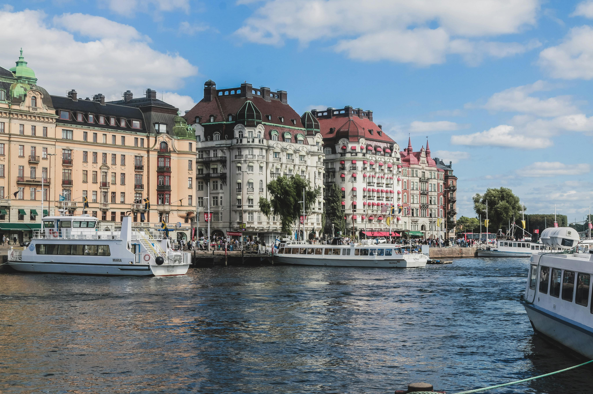
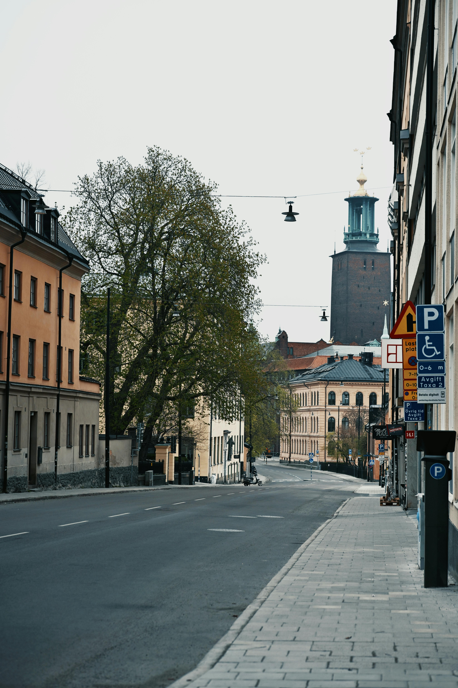
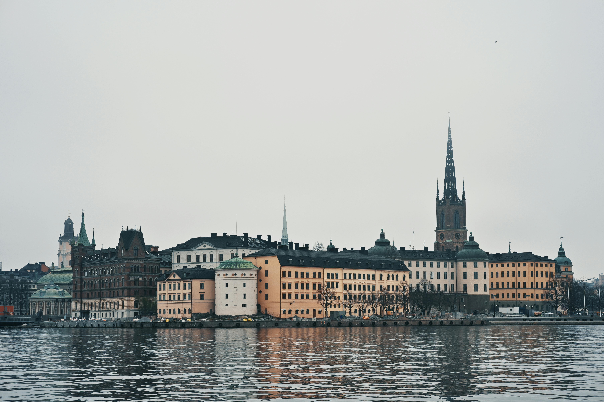
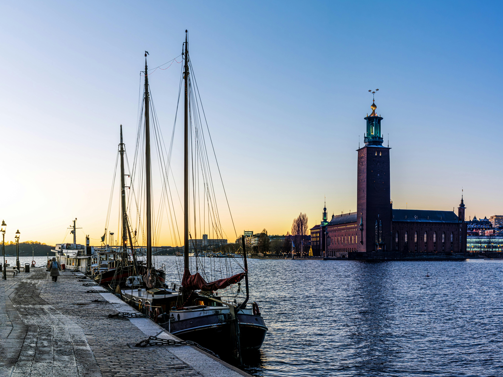

Back when Nicola was living in Cologne, she and a friend decided on a spontaneous weekend in Stockholm — cheap flight, no elaborate plan, just the excitement of a new city. Night one was spent in a retired Boeing 747 parked beside the airport. Night two was on a barge floating in the city centre. And in between, two days of wandering one of the most beautiful capitals in Europe — cobbled streets in Gamla Stan, bridges connecting island to island, harbour views, waterfront coffee and the very particular calm that Stockholm does better than almost any city in the world. It remains one of the coolest little city breaks either of us has ever done.




There is a particular kind of city break that only works when you are young and living somewhere else in Europe — spontaneous, cheap, lightly planned and driven by nothing more than curiosity. Stockholm was that trip for Nicola. Living in Cologne meant the whole of Europe was reachable on a budget flight, and Stockholm had been on the list for a while. One weekend it simply happened.
Stockholm immediately felt different from other European capitals. Cleaner in a way that was immediately noticeable. Calmer, despite being a capital city of over a million people. And above all, scenic — with water visible from almost every street, the city spread across fourteen islands connected by bridges and the whole thing bathed in the particular quality of Scandinavian light that photographers talk about and everyone else just has to experience to understand.
The accommodation choices — partly practical, partly inspired — ended up summing up the spirit of the whole weekend perfectly. From a jumbo jet to a barge in two nights. Budget travel at its most inventive and most memorable.
The Jumbo Stay is exactly what it sounds like — a retired Boeing 747 jumbo jet parked beside Arlanda Airport, converted into a hostel and hotel, where guests sleep inside the fuselage of the actual aircraft. The rooms are built within the plane. The corridors you walk to reach them are the original aircraft corridors. The windows are aircraft windows. And the cockpit has been converted into the most extraordinary suite in Stockholm.
At the time it felt brilliantly random — the kind of place you stay when you are travelling on a budget and decide that ordinary hotels are too ordinary. But it delivered completely. The novelty of waking up inside a jumbo jet, looking out at the runway from your window, walking through an aircraft to get to the (very decent) breakfast — it gave the whole weekend an immediate story and an atmosphere of adventure that set the tone for everything that followed.
It is budget travel at its best: quirky, memorable, genuinely different and something that still comes up in conversation years later. If you are visiting Stockholm and have not considered it — consider it.
Our Jumbo Stay reel — watch this before you book!
Most of the weekend was spent simply walking — which is the right way to do Stockholm. The city rewards aimless exploration completely, and the combination of beautiful architecture, constant water views and the calm Scandinavian atmosphere makes wandering feel like an activity in itself rather than something you do between activities.
Gamla Stan is the old town of Stockholm — a small island of cobblestone streets, narrow medieval laneways, tall colourful buildings leaning companionably towards each other and little cafés tucked into every available corner. It looks almost too perfect — postcard-ready from every angle — and yet it is completely genuine, one of the best-preserved medieval city centres in Scandinavia. Walking through it with no destination in mind and nowhere to be is one of the great small pleasures of any Stockholm visit. It is full of souvenir shops and tourist cafés now, but the bones of it — the streets, the buildings, the views down to the water — are extraordinary.
Stockholm is built on fourteen islands and the bridges connecting them are part of the experience — crossing from one island to the next, the view changes at every bridge, opening onto a different stretch of water and a different perspective on the city. We crossed bridge after bridge, constantly stopping to look at the harbour views and the boats heading out towards the archipelago. The Royal Palace, the busy shopping streets, the harbour packed with ferries — all of it woven together by water and connected by bridges in a way that gives Stockholm an atmosphere completely unlike any landlocked city.
Fika is the Swedish concept of taking a proper coffee break — not a rushed espresso but a real pause, with a good coffee and something to eat, ideally sitting somewhere pleasant with people you like. Stockholm makes fika easy and irresistible — every corner in Gamla Stan has a café, every waterfront has a bench with a view and the whole city seems designed to encourage sitting down and enjoying where you are. Even just sitting with a coffee watching the city go by felt completely enjoyable there. Stockholm has this calm Scandinavian atmosphere that makes it feel sophisticated without ever feeling rushed or stressful.
Swedish food is understated, well-made and deeply satisfying — the cuisine of a cold northern country that does exceptional things with fish, meat and dairy, and produces some of the finest baked goods in the world.
Köttbullar — the real version, with lingonberry jam and cream sauce, is completely different to and better than any IKEA approximation.
Kanelbullar — the Swedish original. Soft, generously spiced, eaten warm with a coffee. The defining fika experience.
Cured salmon with dill — a Swedish classic that appears on every breakfast table and at its best is extraordinary.
Open prawn sandwich — a Swedish institution. Piled high with cold prawns, mayonnaise and dill on sourdough. Brilliant.
Sweden's most important condiment — served with meatballs, pancakes and almost everything else. Sharp, sweet and essential.
Swedes take their coffee seriously — excellent filter coffee served in proper cups in cafés that are designed for lingering in.
Sleeping inside a retired Boeing 747 parked at the airport — aircraft corridors, oval windows looking at the runway, the cockpit overhead. Budget travel at its most inventive and most memorable. Still talked about years later.
Moving from jumbo jet to city-centre barge in twenty-four hours. Sleeping on the water in Stockholm — the lights reflected on the harbour at night — was one of those small perfect experiences that stays with you.
Cobblestone streets, colourful medieval buildings, narrow laneways and cafés at every corner. One of the most beautiful old towns in Scandinavia and the perfect place for aimless wandering with no agenda.
Crossing the bridges between Stockholm's islands — water in every direction, the city spread around you, harbour views opening at every turn. The island character of Stockholm is unlike any other capital in Europe.
Sitting with a coffee at a waterfront café watching the ferries head out to the archipelago. Stockholm's calm Scandinavian atmosphere makes simply being there feel like an activity worth doing.
The feeling of a spontaneous weekend in a beautiful city with no pressure and no agenda. Living in Cologne, hopping to Stockholm for two nights on a cheap flight — the simple freedom of that stage of life, captured perfectly in one weekend.
Sweden beyond Stockholm is extraordinary — the Swedish Lapland, the midnight sun, the northern lights above the Arctic Circle, the west coast and the glass blowing villages of Småland. TourRadar has brilliant Sweden and Scandinavia itineraries for every type of traveller.
Disclosure: This is an affiliate link. If you book through it we may earn a small commission at no extra cost to you.
Stockholm archipelago boat tours, Gamla Stan walking tours, Vasa Museum visits, ABBA Museum entry, Royal Palace tours and Stockholm city cards — book in advance, especially the archipelago boat trips in summer.
Disclosure: If you book through this link we may earn a small commission at no extra cost to you.
Common questions
What to pack for Stockholm
Stockholm means waterfront walking, island exploring and layers — the weather changes fast and the city is best experienced on foot.
Sweden uses EU roaming rules but an eSIM gives seamless data for navigating the islands and finding your way between the hotel barge and Gamla Stan.
View on Amazon →Stockholm is cold outside summer and the waterfront is exposed. Layers are essential — you will be outdoors a lot on bridge walks and island exploring.
View on Amazon →Gamla Stan's cobblestones and the long bridge walks between islands demand proper comfortable shoes. You will cover a lot of ground on foot.
View on Amazon →Long days of city exploring — keep your phone charged for maps, photos and navigating between Stockholm's fourteen islands.
View on Amazon →For city days — keeps your layers, camera and cinnamon buns accessible without a full backpack slowing you down.
View on Amazon →Sweden uses European two-pin plugs — a universal adaptor covers all your devices, whether you're in the jumbo jet or on the barge.
View on Amazon →Disclosure: These are Amazon affiliate links. If you buy through them we may earn a small commission at no extra cost to you.
Stockholm sits at the heart of Scandinavia — read our other Nordic guides below.
Vikings, fjords, Vigeland's naked statues and the most expensive round of drinks we ever paid for. Oslo is Stockholm's dramatic neighbour.
Read the Norway guide →Nordic calm, beautiful harbours and the Church in the Rock — Helsinki is a short ferry crossing from Tallinn and a brilliant Nordic companion to Stockholm.
Read the Finland guide →Hygge, harbour lights and Nyhavn — Copenhagen is Scandinavia's most immediately loveable capital and well worth combining with Stockholm.
Read the Copenhagen guide →Stay in the Jumbo Stay for at least one night. Find a hotel barge for the second. Wander Gamla Stan. Cross every bridge. Have fika by the water. Stockholm is one of the most beautiful cities in Europe and it asks almost nothing of you except to enjoy it.
Affiliate disclosure: if you book through our links we may earn a small commission at no cost to you. We only recommend experiences we've done ourselves.